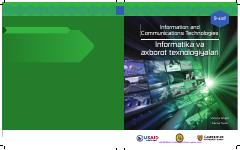

IV9-sinf o'quvchilari uchun mo'ljallangan zamonaviy informatika va axborot texnologiyalari darsligi.
Ushbu darslik 9-sinf o'quvchilari uchun mo'ljallangan bo'lib, kompyuter tizimlari, tarmoqlar, axborot texnologiyalari va dasturiy ta'minot asoslarini qamrab oladi. Kitob Kembrij universiteti nashriyoti bilan hamkorlikda tayyorlangan va zamonaviy AKT ko'nikmalarini rivojlantirishga qaratilgan.